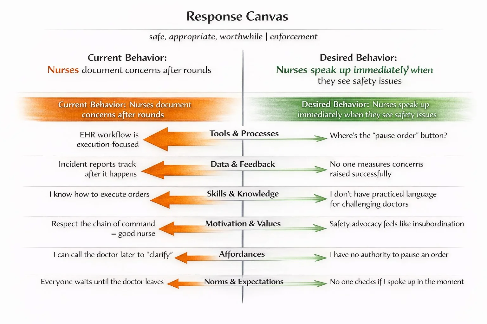

A First Look at Interpretive Conditions Theory
How Legitimacy, Interpretation, and Response Shape Organizing
Matthew Carlson
The Nurse Who Waited
During morning rounds, a nurse notices something wrong with a medication order. The dosage looks high for this patient's weight. She's seen this doctor dismiss concerns before. The last nurse who questioned him in front of the team was told she "didn't understand the clinical picture."
She says nothing.
After rounds, she documents her concern in the chart. She'll call the pharmacy later to "clarify." The order proceeds.
This happens every day, in hospitals everywhere. Not because nurses don't care about patient safety - they care deeply. Not because they lack knowledge - she caught the error. And not because the hospital doesn't want them to speak up - there are posters on every floor encouraging it.
Here's what made it interesting: Nobody wanted this.
The nurse didn't want to stay silent about a safety concern. The doctor didn't want to miss dosing errors. The hospital didn't want near-misses going unreported. The patient certainly didn't want to be at risk.
Everyone could see the problem. Nobody could change it.
This is a stuck system - not a place where people are confused or lazy or resistant, but where reasonable, well-intentioned people are responding to what they see around them, and those responses are keeping the pattern locked in place.
What the Theory Explains
Interpretive Conditions Theory is an interpretive theory of organizing that explains persistent patterns of behavior as responses to conditions people interpret as legitimate, risky, or worthwhile over time.
The theory rests on a simple but powerful claim:
Human systems don't obey - they respond.
Behavior emerges from interpretation of conditions, not from instructions, plans, or mandates alone. People don't primarily change behavior because they are told to or persuaded to adopt new attitudes. Instead, behavior emerges as a locally sensible response to what the system has taught people - through experience - about which actions are safe, expected, rewarded, or punished.
From this perspective, the nurse wasn't failing. She was responding exactly as the conditions taught her to respond. The environment sent signals. She interpreted those signals and learned what mattered. She responded accordingly. And her response created conditions that reinforced the pattern for the next nurse watching.
This is what holds systems in place: not any single element, but the way they reinforce each other in a continuous loop.
Core Concepts
Conditions
Conditions are the external, observable features of the environment that produce the signals people interpret when deciding how to act.
Conditions are the source - the tools, norms, processes, feedback systems, structures, and constraints that generate cues. They include what tools and systems allow or prevent, what gets measured and displayed, how meetings are structured, what leaders ask about, who gets invited to which conversations, what's rewarded or punished, and what's absent or withheld.
For the nurse, the conditions included:
- An EHR workflow focused on order execution, not order questioning
- No "pause order" button - no easy path to halt something that looks wrong
- Incident reports that track what happened after harm, not concerns raised before
- A professional hierarchy where "respect the chain of command" defines good nursing
- Stories everyone knows: what happened to the last person who spoke up
Conditions matter because they shape what actions feel legitimate or risky - often before people consciously deliberate about what to do.
Crucially, conditions are both input and output. People respond to conditions, and their responses create new conditions others will respond to. When the nurse stayed silent, she became a condition for the next nurse watching. This recursion is why organizational patterns are so hard to change.
Cues
Cues are the signals people actually receive from conditions - what reaches their awareness and becomes the input to interpretation.
A condition exists whether or not anyone notices it. Cues are what people actually receive. The EHR workflow is a condition. "There's no button to pause this order" is the cue the nurse receives from that condition.
Examples of cues from the nursing scenario:
- The doctor's dismissive response last time (received signal: questioning isn't welcome)
- Everyone waiting until the doctor leaves to talk (received signal: that's when it's safe)
- No one asking "did you speak up in the moment?" (received signal: it's not expected)
- The workaround everyone uses - call pharmacy to "clarify" (received signal: this is how we handle it)
Cues often operate implicitly. The nurse may not consciously think "the absence of a pause button signals that questioning orders isn't supported." But she reliably responds to it.
Legitimacy
Legitimacy is the shared sense of what actions are appropriate, acceptable, and sensible in this system, right now - the invisible approval that determines what feels possible.
Not the official rules. The felt rules.
Legitimacy answers questions people rarely say out loud: "Is this safe?" "Does this make me look competent?" "Will this get me blamed?" "Is this worth the effort?"
Legitimacy has three dimensions that matter:
Safe - "Will I be punished for this? Is it risky?" This determines whether people attempt the action at all.
Appropriate - "Is this what people like me do here?" This determines whether the action fits social expectations.
Worthwhile - "Is this worth the effort? Does it achieve something meaningful?" This determines whether people sustain the action over time.
There's also a fourth dimension that operates differently:
Enforcement - "What happens if I don't?" This determines whether compliance occurs independent of belief.
For the nurse: documenting concerns after rounds was safe (no confrontation), appropriate (everyone does it), and felt worthwhile (at least it's on the record). Speaking up in the moment was unsafe (risked being dismissed or worse), inappropriate (not what "good nurses" do to doctors), and not worthwhile (it wouldn't change anything anyway).
Key insight: People can comply with actions that feel safe and enforced even when they don't believe the action is worthwhile. This creates patterns where behavior persists despite lack of belief - compliance without commitment.
Response
Response refers to the actions people take - or avoid - based on their interpretation of legitimacy and risk.
Responses can take different forms:
- Reproduction: Enacting the existing pattern (the pattern persists through reenactment)
- Variation: Slight deviation from the pattern (the pattern evolves gradually)
- Testing: Breaking the pattern to see what happens (reveals the pattern's strength)
- Coordinated change: Enough people enact differently that a new pattern emerges
In the hospital, people responded accordingly:
- Nurses documented concerns after rounds instead of speaking up (it was safe and expected)
- Doctors moved quickly through rounds, not inviting questions (efficiency was rewarded)
- Pharmacy fielded "clarification" calls they knew were really safety concerns (absorbed the workaround)
- Leadership measured incident reports, not near-misses caught (what got counted got managed)
Each response made sense from that person's position in the system. Each was a reasonable interpretation of what the environment was teaching. And each response created conditions that reinforced the pattern.
This is the central insight of the theory:
Change is not what leaders introduce. Change is how people respond.
Agency
Agency is the capacity of individuals and groups to choose how they respond to conditions.
Agency is not unlimited freedom. It is interpreted choice under conditions - meaningful selection within constraints. People aren't puppets. They interpret, comply, resist, adapt, and improvise based on what feels legitimate, risky, or possible.
Agency is how structures are recreated or changed. Every moment of interpretation and response is an opportunity for reproducing the existing pattern, varying it slightly, testing it, or - when coordinated - transforming it.
This is what makes systems unpredictable. And it's what makes change possible.
Agency produces variation within constraints - not escape from constraints.
Structures
Structures are the recurring patterns that organize how work actually happens - how decisions get made, where authority shows up, what gets checked or skipped, and which actions reliably lead to progress or pushback.
Most organizational thinking treats structures as things: org charts, policies, systems, "the culture." These are treated as if they exist independently and influence people's behavior.
Interpretive Conditions Theory takes a different view:
Structures are not things. They are patterns that exist only in continuous coordinated enactment.
Think of structure the way you think of language. English doesn't exist stored somewhere - it exists only in the continuous practice of speaking and writing it. If everyone stopped speaking English tomorrow, it would cease to exist as a living structure.
Organizational structures work the same way. What we call "the culture" or "how things work here" exists only in continuous enactment. Each person holds fragments of this structure - what they've learned about what's legitimate, safe, or worthwhile. When enough people enact overlapping patterns, it feels like a shared structure. But that structure persists only through ongoing reproduction.
Structures don't determine behavior. They determine what behavior means.
They shape the paths of least resistance - but they never guarantee what people will do.
The Recursive Loop
The core mechanism of Interpretive Conditions Theory is the self-reinforcing cycle through which patterns persist:
Conditions → Cues → Interpretation → Legitimacy Judgments → Response → New Conditions
↑ ↓
└─────────────────────────────────────────────────────────────────────────────┘
The loop explains why:
- One-time interventions don't work - the loop recreates old conditions
- Patterns persist even when no one wants them - each element reinforces the next
- Change requires shifting enough elements - so the loop can't recreate itself
This is why "speak up for safety" campaigns fail when nothing else changes. Adding posters (one source of cues) while leaving everything else unchanged means the full pattern across the environment still teaches the old response. People read the whole environment, not just the posters.
One-time interventions don't work because the loop is intact.
The Six Domains
The theory identifies six domains through which legitimacy is most commonly signaled and learned. These aren't conditions themselves, and they aren't levers. They're influence gradients - uneven pressures that shape interpretation with different strengths, speeds, and effects.
Tools & Processes - What the system makes easy, visible, or required. "What does the tool make easy? Invisible? Accidentally legitimate?"
Data & Feedback - What people notice and respond to. "Which metrics create pressure? Which realities never appear in dashboards?"
Skills & Knowledge - What people can actually do. "Where do people hesitate from lack of capability, not motivation?"
Motivation & Values - How people make sense of situations. "Where do people express desire but conditions don't support follow-through?"
Affordances - What the environment makes possible - to do and to think. "What paths are actually open or closed here?"
Norms & Expectations - What "people like us" do. "What do people feel they must justify vs. do without explanation?"
When domains align - cues across all six point the same direction - legitimacy can converge quickly: "Yes, this is clearly what we do here. All signals confirm it."
When domains send contradictory signals, legitimacy remains contested: "Leadership says they want nurses to speak up, but tools don't support it, nobody's trained on how to do it, it's not measured, and people who try it get penalized."
This is why change initiatives fail when they only shift one domain. If you announce new values (motivation) but tools, feedback, skills, affordances, and norms all still support the old pattern, the system continues teaching the old response.
The Response Canvas
The Response Canvas is a diagnostic tool for mapping what conditions support current behavior versus desired behavior across the six domains.
Here's how it works: You name the current behavior pattern you're seeing, name the desired behavior you want instead, and then examine what's happening in each domain that makes the current behavior feel legitimate while making the desired behavior feel risky or pointless.
Let's apply it to our nursing scenario:
Current Behavior: Nurses document concerns after rounds
Desired Behavior: Nurses speak up immediately when they see safety issues

Look at each domain:
Tools & Processes: The EHR workflow is execution-focused. There's no "pause order" button. The tool makes it easy to carry out orders and hard to question them. Current behavior wins.
Data & Feedback: Incident reports track what happened after harm occurs. No one measures concerns raised successfully - there's no feedback loop for speaking up. Current behavior wins.
Skills & Knowledge: Nurses know how to execute orders. They don't have practiced language for challenging doctors in the moment. Current behavior wins.
Motivation & Values: "Respect the chain of command" defines good nursing. Safety advocacy feels like insubordination. Current behavior wins.
Affordances: Nurses can call the doctor later to "clarify" - there's a workaround available. But they have no authority to pause an order in the moment. Current behavior wins.
Norms & Expectations: Everyone waits until the doctor leaves to talk. No one checks whether you spoke up in the moment. Current behavior wins.
The Canvas reveals why the current pattern persists: all six domains point toward documenting concerns after rounds. The desired behavior - speaking up immediately - isn't supported by any domain.
This is what "stuck" looks like when you map it. Not bad people. Not resistance. Just an environment that teaches one response so consistently that the alternative never feels legitimate.
The Canvas reveals where shifts might matter. You can't change everything at once. But now you can see: What if there was a pause button? What if someone did ask "did you speak up in the moment?" What if nurses were trained on language for raising concerns?
No single change guarantees different behavior. But the Canvas shows where the current pattern is most heavily reinforced - and where cracks might open.
Why Patterns Persist
The theory explains organizational stability as a consequence of learned interpretation, not resistance to change.
Patterns persist because people keep finding them sensible, safe, or necessary - not because the patterns are stored somewhere preventing change.
Consider the nursing unit where silence during rounds has become normal. Nurses learned: "speaking up to doctors is risky." Even after the problematic doctor leaves, people may remain silent. No one needs to enforce silence; the pattern has already formed through distributed learning. The system continues to respond to what it has learned about risk.
Each person holds a fragment of this learning:
- "I saw what happened to Sarah when she questioned that order"
- "My first week, someone told me to save concerns for after rounds"
- "The charge nurse said I was 'creating conflict' when I spoke up"
- "Rounds go faster when no one asks questions"
When these fragments overlap enough, they create coordinated enactment: everyone stays silent during rounds. The pattern feels real and shared, even though it exists nowhere except in the continuous reproduction of silent responses.
This is what the theory calls Structural Memory - the persistence of expectations and responses formed through repeated experience. Structural Memory explains why patterns endure even after conditions begin to change. It lives in routines, habits, workarounds, and reflexive responses that once worked.
Systems don't snap back because people resist; they snap back because legitimacy fell faster than proof.
How Change Actually Happens
Change occurs when conditions shift sufficiently that different responses become legitimate - and when enough people begin enacting those different responses that a new coordinated pattern emerges.
This requires both:
- Condition shifts - making new responses feel legitimate (safer, more appropriate, more worthwhile)
- Coordinated enactment - enough people actually responding differently that a new pattern forms
Changing conditions alone isn't sufficient if people don't enact different responses. And people enacting different responses isn't sustainable if conditions still punish those responses.
Change stabilizes when:
- Conditions shift to make new responses legitimate
- Enough people enact the new response that it becomes coordinated
- The new pattern gets repeated enough that it becomes learned
- The system now encodes the new pattern as "how we do things"
Two types of change failure:
Type 1: Conditions don't actually change. The hospital hangs "speak up for safety" posters but cues across domains still reinforce silence. Result: brief compliance followed by reversion.
Type 2: Coordination doesn't emerge. Conditions shift - maybe one unit gets the pause button, the training, the supportive charge nurse - but people don't enact new responses at sufficient scale or consistency across the organization. Result: scattered adoption, no pattern formation, eventual abandonment.
Successful change requires both.
Culture doesn't change once - it changes every time the system practices something new long enough for it to feel safe.
When Compliance Isn't Belief
A critical insight of Interpretive Conditions Theory is that behavioral stability doesn't necessarily indicate belief or acceptance.
Coordination can tip while legitimacy remains contested.
This produces a stable state in which practices are routinely enacted (behavioral stability) but people never come to believe the practice makes sense (interpretive resistance persists).
This happens when enforcement mechanisms sustain behavior - monitoring, dependencies, consequences - but the interpretive environment continues generating cues of illegitimacy: unfairness, hypocrisy, or misalignment across the organization.
Examples are everywhere:
- Open office plans: widely adopted, persistently hated
- Performance reviews: required everywhere, trusted nowhere
- Return-to-office mandates: enforced compliance, ongoing legitimacy conflict
- Compliance training: everyone does it, no one thinks it works
Most organizational thinking assumes behavioral stability implies legitimacy - "if people keep doing it, they must accept it." The theory shows this is false.
Practices can become routines of compliance before - and even without - becoming legitimate as shared meaning.
People learn "this is required" without ever learning "this makes sense." The structure that forms encodes "how to survive this," not "this is right."
Why this matters for change:
Compliance metrics (adoption rates, usage statistics, behavioral observations) are insufficient evidence of successful change. They measure coordination, not legitimacy. To assess legitimacy, you need to examine how people talk about the practice. Do they justify it or just comply? Do they defend it or work around it?
If you're observing high compliance alongside persistent resistance, adding more enforcement won't resolve legitimacy. You need to address the contradictory cues across domains that prevent interpretive convergence.
Scope and Limitations
Interpretive Conditions Theory applies to persistent patterns of behavior in human systems where interpretation, legitimacy, and learning operate over time.
The theory does not seek to explain:
- Purely physical impossibility or non-negotiable material constraint unrelated to social organization
- Momentary compliance under first-contact coercion
- Behavior in total institutions with continuous surveillance and enforcement
- The psychological origins of radical novelty or creativity
- Non-social or purely mechanical systems
The theory is diagnostic rather than predictive. It explains why patterns persist and where influence accumulates, but it does not guarantee outcomes. Changing conditions increases likelihood - it doesn't determine results.
Within-organization scope: The theory is deliberately focused on team and organization level dynamics. It does not attempt to explain field-level diffusion of practices across organizations, industry-wide convergence, or how organizational practices become taken-for-granted at societal level.
What this is not:
- Not a methodology. No steps to implement. Provides lenses and tools, not recipes.
- Not predictive. Changing conditions increases likelihood, doesn't guarantee outcomes.
- Not prescriptive. Describes how systems work, not how they should be.
- Not about blame. When you see behavior as response, you stop asking "who failed."
- Not mechanistic. People interpret, choose, resist, experiment. Agency matters.
Critique
Critics may argue that Interpretive Conditions Theory under-specifies the mechanics of power, enforcement, and strategic action - particularly in contexts where authority is highly centralized or coercive. Others may question whether the theory can account for moments of rapid change driven by legal rulings, political realignments, or technological disruption.
These critiques have merit. The theory is not a comprehensive account of power acquisition, institutional engineering, or individual motivation. It explains how legitimacy and constraint shape collective response over time, and how repeated responses stabilize into pattern through continuous coordinated enactment.
On power: The theory acknowledges that some actors have greater capacity to shape conditions others respond to. However, even powerful actors cannot simply impose legitimacy - they can enforce compliance, but interpretive convergence requires cue alignment across domains. Power matters most in determining what gets monitored and enforced, what becomes visible or invisible, and whose interpretations get amplified or suppressed. But power cannot directly create taken-for-grantedness. That requires coordinated enactment and distributed learning over time.
On rapid change: External shocks can certainly disrupt patterns quickly. But the theory would predict that unless the shock also shifts the conditions people respond to across multiple domains, the system will tend to recreate similar patterns once the acute disruption passes. This helps explain why crisis-driven changes often fade once the crisis ends.
The theory is most useful for understanding persistence, resistance, backlash, and fragmentation in human systems. It invites empirical testing in contexts where legitimacy and conditions appear misaligned - where what the organization says it wants diverges from what behavior the environment actually teaches.
Key Terms
- Interpretive Conditions Theory
- An interpretive theory of organizing that explains persistent patterns of behavior as responses to conditions people interpret as legitimate, risky, or worthwhile over time, with patterns persisting only through continuous coordinated reenactment.
- Human Systems
- A perspective on organizations that treats them as responsive interpretive systems - patterns of coordinated behavior that emerge from how people interpret the conditions they encounter and respond accordingly. Human systems don't obey - they respond.
- Conditions
- The external, observable features of the environment that produce the signals people interpret when deciding how to act. Conditions are both input (what people respond to) and output (created through coordinated responses) in a recursive loop.
- Cues
- The signals people actually receive from conditions - what reaches their awareness and becomes the input to interpretation. Conditions produce cues; cues are what people receive.
- Legitimacy
- The shared sense of what actions are appropriate, acceptable, and sensible in this system, right now. Not the official rules - the felt rules. Legitimacy emerges from norms, structures, cues, professional scripts, and past consequences.
- Legitimacy Dimensions
- The three dimensions through which people assess legitimacy: Safe (will I be punished?), Appropriate (is this what people like me do?), and Worthwhile (is this worth the effort?). Plus Enforcement, which operates differently - determining compliance independent of belief.
- Agency
- The capacity of people to choose how they respond to conditions, even when options are constrained. Agency is how structures are recreated or changed - every response is enactment that either reproduces or shifts the pattern.
- Response
- The actions people take - or avoid - based on their interpretation of legitimacy and risk. Responses can reproduce existing patterns, vary slightly, test patterns, or (when coordinated) create new patterns.
- Structures
- Recurring patterns that organize how work actually happens. Structures exist only in continuous coordinated enactment - they persist through ongoing reenactment, not because they're stored somewhere.
- The Recursive Loop
- The self-reinforcing cycle through which patterns persist: conditions produce cues → people interpret cues → form legitimacy judgments → respond → responses become new conditions.
- Domains
- Six categories through which legitimacy is signaled and learned: Tools & Processes, Data & Feedback, Skills & Knowledge, Motivation & Values, Affordances, and Norms & Expectations. Domains are influence gradients - uneven pressures that shape interpretation.
- Affordances
- What the environment makes possible - to do and to think. Affordances surface the gap between "you should do X" and "you can actually do X." The domain asks: is the path actually open, or just described?
- Response Canvas
- A diagnostic tool for mapping what conditions support current behavior versus desired behavior across the six domains, revealing where the pattern is reinforced and where shifts might matter.
- Structural Memory
- The persistence of expectations and responses formed through repeated experience. Explains why patterns endure even after conditions begin to change - it lives in routines, habits, workarounds, and reflexive responses that once worked.
- Stuck System
- A system where reasonable, well-intentioned people are responding to what they see around them - and those responses are keeping the pattern locked in place. Not failed people, but an intact loop.
- Shaping
- The practice of working with conditions - the cues, structures, and interactions that guide how people make sense of things. It's not about telling people what to do; it's about influencing what feels sensible to do.
© Applied Principles Consulting LLC